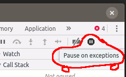

Created by Fernando Baroni (fernando.baroni@gft.com)
(() => {
const date = new Date();
if(date.getFullYear() >= 1992) {
if(date.getMonth() >= 9) {
if(date.getDate() <= 13) {
console.log(date.toISOString());
}
} else {
debugger;
}
}
})();
Press F12; The 'debugger' breakpoint pauses the execution when evaluated; While paused, try setting a breakpoint by clicking on it's line number.
(() => {
let c = 1;
console.log('Something');
c++; // rocks
do_something_fun();
console.info('...useful');
})();
Enable the 'Exception' breakpoint by toggling
Breakpoints that allows to conditionally pause the code for certain conditions. It can be exploited to evaluate/modify expressions and code in real time. We can use it to add logging and even timing/profiling.
(() => {
for(let i = 0; i < 8; i++) {
setTimeout(() => {
const v = Math.ceil(Math.abs((i * i) / (i - 5)));
const text = 'hello conditionals ' + v;
text.length < 22
? notifier.success(text)
: notifier.warning(text);
}, i * 1200);
}
})();
(() => {
for(let i = 0; i < 8; i++) {
setTimeout(() => {
const v = Math.ceil(Math.abs((i * i) / (i - 5)));
const text = 'hello conditionals ' + v;
if(text.length > 22) debugger; // I won!
text.length < 22
? notifier.success(text)
: notifier.warning(text);
}, i * 1200);
}
})();
(() => {
for(let i = 0; i < 8; i++) {
setTimeout(() => {
const v = Math.ceil(Math.abs((i * i) / (i - 5)));
const text = 'hello conditionals ' + v;
text.length < 22
? notifier.success(text)
: notifier.warning(text);
}, i * 1200);
}
debugger; // Just to we break into the VM
})();
(() => { debugger;
const scoreFormatter = cell => {
const r = cell.getRow().getData();
return r.base + r.project; }
const table = new Tabulator('#conditional-table', {
layout: 'fitColumns',
columns:[
{title: 'Name', field: 'name'},
{title: 'Base', field: 'base'},
{title: 'Project', field: 'project'},
{title: 'Score', field: 'score',
formatter: scoreFormatter}],
data: [
{name: 'Fernando', base: 4.2, project: 3.8},
{name: 'Yuna', base: 4.2, project: 4.8},
// Yuna - the most beautiful mage
{name: 'Tidus', base: '2.9', project: 2.2},
]
});
})();
(() => { debugger;
const saved = [];
for(let i = 0; i < 10; i++) {
const o = { i, e: i * 2 };
if (o.i < 5) {
saved.push(o);
}
}
})();